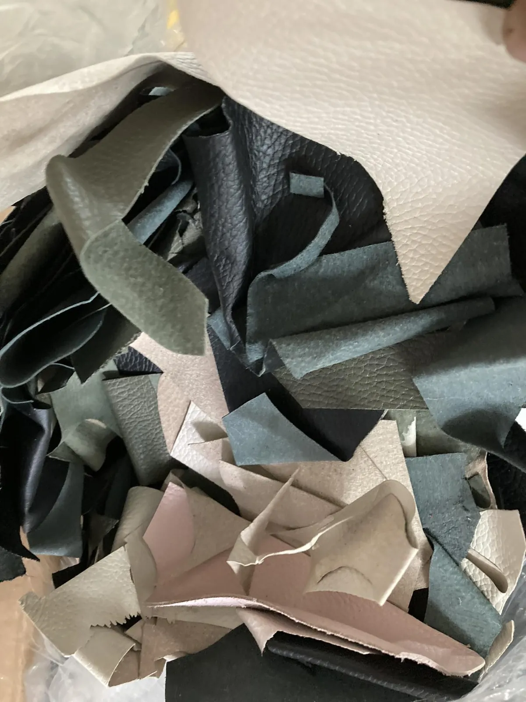
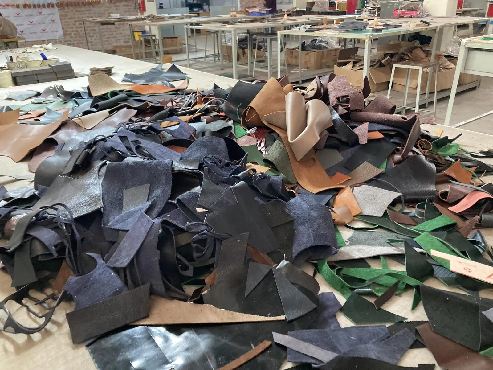

- Minimum order
- Ask usper design
- Lead time
- Ask usafter sample approval
- Line
- Handcraft Line
Ask us, and we confirm the minimum and lead time for your design in your quote.



Uses
What it suits.
Good for
Good to know
- New leather or sorted offcuts
- Patchwork means colour varies by batch
- Combines with kantha and jute
How to start
Request a sample with a sketch, a reference photo or a product you want to adapt. We confirm the material, the motif and the sample fee before you pay.


Start small
Start with a sample.
Send us your idea. We tell you which line fits, what the sample costs and how long it takes — before you commit to a production order.